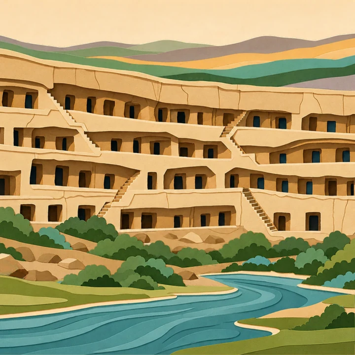
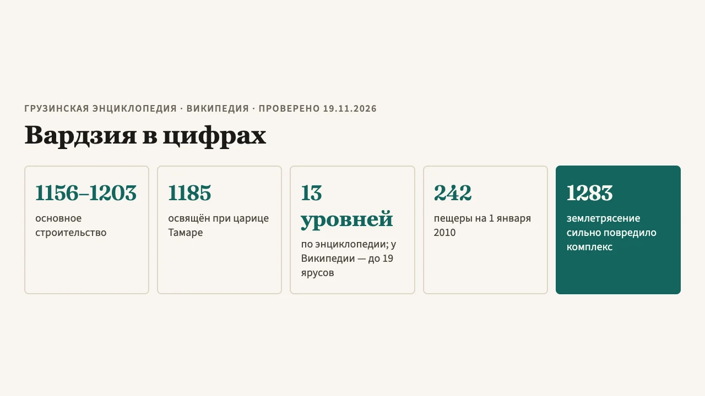
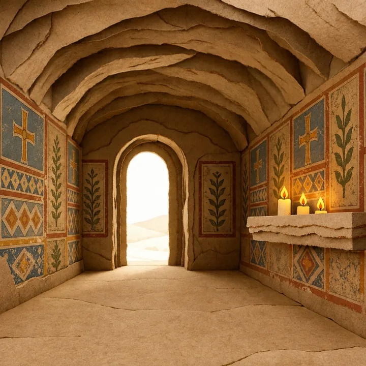
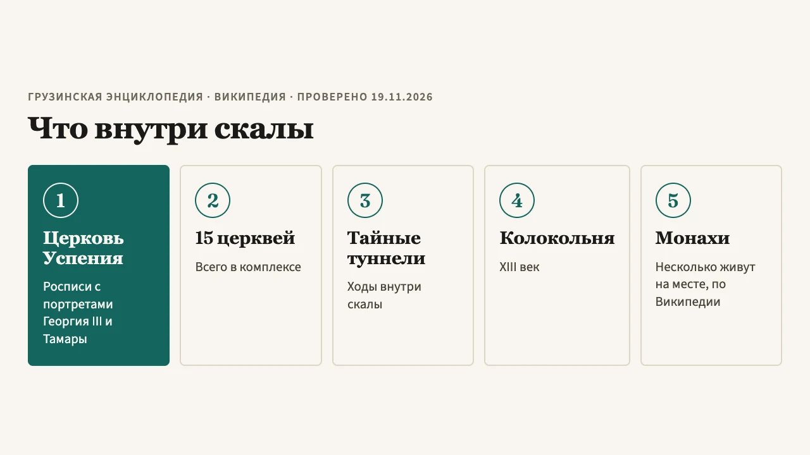

- Строили
- 1156–1203
- Освящён
- 1185
- Пещер
- 242 (на 2010)
- Уровней
- 13
- Скорая
- 112
Статья входит в справочник о медицине в Грузии.
Пещерный город царицы Тамары
Это монастырь, вырубленный в скале на юге Грузии. По Грузинской энциклопедии (на английском), комплекс строили в основном в 1156–1203 годах и освятили в 1185 году — в правление царицы Тамары (1184–1213).
Где стоит. По Википедии (на английском), монастырь высечен в склоне горы Эрушети, на левом берегу Куры, в 30 км от Аспиндзы. Это край Самцхе-Джавахети. Земли музея-заповедника, уточняет энциклопедия, лежат в трёх муниципалитетах: Аспиндзском, Ахалкалакском и Ниноцминдском.
Сколько ярусов. Источники считают по-разному. Энциклопедия пишет о 13 уровнях. Википедия — что пещеры тянутся вдоль скалы примерно на 500 м и поднимаются до 19 ярусов. Мы приводим обе цифры: у каждой свой источник.
Сколько пещер. Энциклопедия на 1 января 2010 года насчитала 242 пещеры. Английская Википедия пишет примерно о 500 пещерах всего (242 у неё — комнаты в восточной части). Счёт разный — мы приводим цифру энциклопедии с датой.
Откуда название. Википедия пересказывает предание. Юная Тамара на охоте с Георгием, заблудилась в пещерах, а на зов ответила: «Ак вар, дзиа» — «Я здесь, дядя». Отсюда будто бы и Вардзия. Это легенда, а не история.
Землетрясение 1283 года. По Википедии, оно сильно повредило комплекс, и потом его частично отстраивали. Тогда же погибла часть росписей в притворе главной церкви.
Что было потом. Википедия называет монастырь важным центром книжности и искусства. В 1551 году его разграбили персы шаха Тахмаспа I, а после прихода османов в XVI веке монахи ушли, и монастырь опустел. По Википедии, сейчас здесь живут несколько монахов.
Охрана. Музей-заповедник основан в 1938 году. С 2008-го он в ведении Национального агентства охраны культурного наследия Грузии — это тоже данные энциклопедии.
ЮНЕСКО. Вардзию вместе с Хертвиси предлагали включить в Список всемирного наследия ЮНЕСКО. Пока это только заявка: в сам список комплекс не вошёл.


Что внутри скалы
Сердце комплекса — церковь Успения. Её росписи и росписи притвора энциклопедия датирует 1184–1203 годами. Кроме сцен из жизни Христа, там есть портреты царя Георгия III и царицы Тамары.
Портрет Тамары. По Википедии, оба правителя изображены на северной стене, в коронах и с нимбами, с моделью церкви в руках. У Тамары нет ленты замужней женщины. Поэтому роспись относят ко времени между смертью Георгия в 1184 году и свадьбой Тамары в 1186-м. Это самое раннее из четырёх известных изображений царицы.
Сама церковь. По Википедии, её тоже вырубили в скале, а стены укрепили камнем. Размер — 8,2 на 14,5 м, высота — 9,2 м, свет дают три окна. Из соседнего зала ведёт туннель, который заканчивается бассейном с холодной водой.
Кто расписывал. По Википедии, росписи сделаны не по сырой штукатурке, как фрески, а по сухой — в технике секко. Имя художника, Георгий, написано в алтаре. Заказчик — эристав Картли Рати Сурамели: его портрет тоже есть на северной стене.
Что ещё в скале. Энциклопедия перечисляет, из чего состоял комплекс на 2010 год:
- «зал» с маленькой церковью и келья Тамары;
- зал совета, трапезная, винный погреб с комнатами для застолий, аптека;
- водовод;
- укрытия и тайные туннели для обороны;
- колокольня XIII века и притвор главной церкви;
- церковь Ананаури с росписями XIII–XV веков.
Всего здесь 15 церквей. Всего погребов 25, в них 185 квеври — глиняных кувшинов для вина, пишет энциклопедия.
Наш совет. Росписи древние и хрупкие: не трогайте стены руками. Можно ли снимать со вспышкой, спросите на месте.


Рядом: Хертвиси и Рабати
Обе крепости — в том же крае Самцхе-Джавахети.
Хертвиси. Это село в Аспиндзском муниципалитете, там, где сливаются Кура (по-грузински Мтквари) и Паравани. Над селом стоит большая крепость Хертвиси, пишет Википедия (на английском). Именно пару Вардзия — Хертвиси подавали в ЮНЕСКО.
Рабати. Средневековая крепость в городе Ахалцихе, недавно восстановленная. Википедия (на английском) называет её одной из главных достопримечательностей края вместе с Вардзией.
Камнепады и закрытые участки
Камни со скалы падают периодически: комплекс стоит в сейсмически активной зоне. Об этом в сентябре 2026 года сообщило Национальное агентство охраны культурного наследия, его слова передаёт Georgia Today (на английском).
Что уже сделали. В опасных местах поставили защитные сетки, специалисты следят за скалой.
Что закрыто. На сентябрь 2026 года закрыт для посетителей участок у так называемого «Тайного туннеля». Это название конкретного места — не путайте его с тайными туннелями для обороны, о которых пишет энциклопедия. Ранее в 2026 году камнепады там повредили пешеходный мостик и защитные перила.
Насколько опасно. Специалисты агентства и геологи Грузинского технического университета обследовали место. Риск новых камнепадов они оценили как минимальный.
Когда откроют. Агентство обещало убрать обломки, поставить ещё сетки и починить перила. Полный доступ к Вардзии вернут после работ. Закончены ли они, мы не знаем. Что открыто сейчас, спросите на входе.
Почему работы идут по правилам. Агентство напоминает: Вардзия — памятник культурного наследия национального значения. Любое вмешательство в памятник возможно только на основе исследований специалистов и по сертифицированным методикам.
Почему трясёт. В Грузии часто бывают небольшие землетрясения, пишет GOV.UK (на английском). Правительство Канады добавляет: страна лежит в активной сейсмической зоне, а землетрясения могут вызывать оползни. После первого толчка возможны сильные повторные.

Наш совет. Наденьте закрытую обувь с цепкой подошвой: к кельям ведут каменные ступени и тропы. Возьмите воду. Не заходите за ограждения и сетки, даже если там пусто и хочется хорошего кадра.
Как добраться до Вардзии
Ориентир — Аспиндза: по Википедии, монастырь в 30 км от неё, на левом берегу Куры. Время в пути и расписания мы не даём — официальных данных не нашли.
Наш совет. Доезжать удобнее с запасом времени: в том же Аспиндзском муниципалитете стоит крепость Хертвиси, её легко добавить к поездке.
Пара советов о дороге из официальных источников:
- Дорога. Вне Тбилиси, особенно в глуши, GOV.UK советует ехать на машине, которая подходит для плохой дороги, и узнавать погоду на месте.
- Знаки. В сельских районах, по данным Канады, дороги порой плохо содержатся, а знаки бывают только на грузинском.
По пути можно заехать в Боржоми — о курорте и его воде у нас есть отдельный путеводитель. Если поедете сами, прочитайте, как водить в Грузии.
Где врач рядом с Вардзией
Срочно — звоните 112. GOV.UK (на английском) советует набрать 112 и попросить скорую — по-английски ambulance.
Чего ждать. Вне Тбилиси, по GOV.UK, медицинская помощь ограничена. Правительство Канады (на английском) пишет, что в сельских районах не хватает лекарств и персонала, а скорая может не добраться в сельские районы. Там же сказано, что связаться со службами на английском можно через приложение 112 Georgia.
При травме. Звоните 112 и просите скорую. Если вас направили в клинику, GOV.UK советует сразу сообщить об этом в страховую компанию. Там же сказано, что у британского МИД есть список медицинских учреждений Грузии, где часть персонала говорит по-английски. Канада предупреждает: в сельских районах клиники могут не дотягивать до привычного уровня.
Если не срочно. Ищите врача в Ахалцихе — это административный центр Самцхе-Джавахети, по Википедии. Клиники города собраны в каталоге клиник Ахалцихе на 100doc.ge.
Полис. Для въезда в Грузию иностранцу нужен полис с покрытием не меньше 30 000 лари — подробнее в нашем разделе о полисе для въезда.
Наш совет. Сохраните в телефоне 112 и держите заряд. Если что-то случилось, сразу скажите диспетчеру, что вы в Вардзии, и назовите ближайшее село. Подвернули ногу на ступенях — не спускайтесь в одиночку: попросите о помощи смотрителей или других посетителей.
Частые вопросы
Сколько пещер в Вардзии?
На 1 января 2010 года — 242, по Грузинской энциклопедии. Ярусов в комплексе 13 по энциклопедии и до 19 по Википедии.
Когда построен пещерный город?
В основном в 1156–1203 годах. Освятили его в 1185 году, когда правила царица Тамара.
Открыта ли Вардзия сейчас?
Да, но на сентябрь 2026 года участок у Тайного туннеля был закрыт — уточняйте на входе. Полный доступ обещали вернуть после работ.
Как добраться до Вардзии?
Ориентир — Аспиндза: монастырь в 30 км от неё. Время в пути и транспорт не даём — официальных данных не нашли.
Это памятник ЮНЕСКО?
Пока нет. Вардзию вместе с Хертвиси предлагали включить в Список всемирного наследия ЮНЕСКО, но пока это только заявка.
Что посмотреть рядом?
Крепость Хертвиси у слияния Куры и Паравани и крепость Рабати в Ахалцихе.
Где врач, если что-то случилось?
Срочно — 112, попросите скорую. Не срочно — клиники Ахалцихе. Вне Тбилиси помощь ограничена, а Канада предупреждает: скорая может не добраться в сельские районы.
Что взять с собой?
Закрытую обувь с цепкой подошвой и воду. Сохраните в телефоне 112.
Источники
- Грузинская энциклопедия: музей-заповедник — даты, ярусы, церковь Успения, 15 церквей (на английском)
- Википедия: Vardzia — Эрушети, Кура, ярусы, землетрясение 1283 года, монахи, заявка в ЮНЕСКО (на английском)
- Википедия: Хертвиси (на английском)
- Википедия: крепость в Ахалцихе (Рабати) (на английском)
- Википедия: Ахалцихе — центр Самцхе-Джавахети (на английском)
- Georgia Today: камнепады и закрытый участок, 15 сентября 2026 года (на английском)
- GOV.UK: землетрясения и дороги вне Тбилиси (на английском)
- GOV.UK: здоровье, 112 (на английском)
- Правительство Канады: медицина в сёлах, землетрясения, дороги (на английском)
Это справочная информация, а не медицинская консультация. Что открыто в Вардзии, уточняйте на месте. Проверено 19 ноября 2026 года.